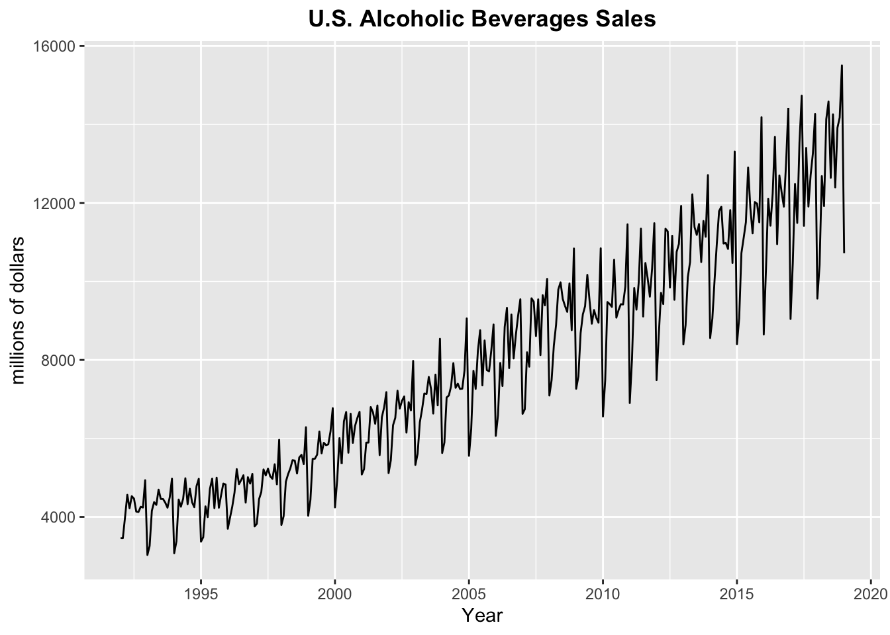
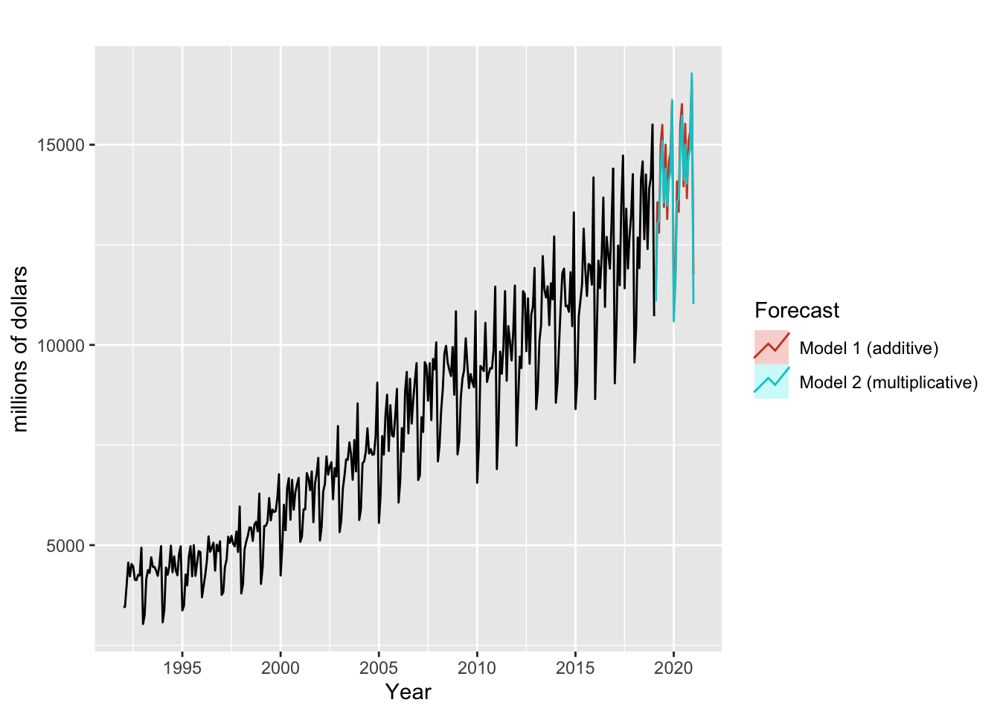
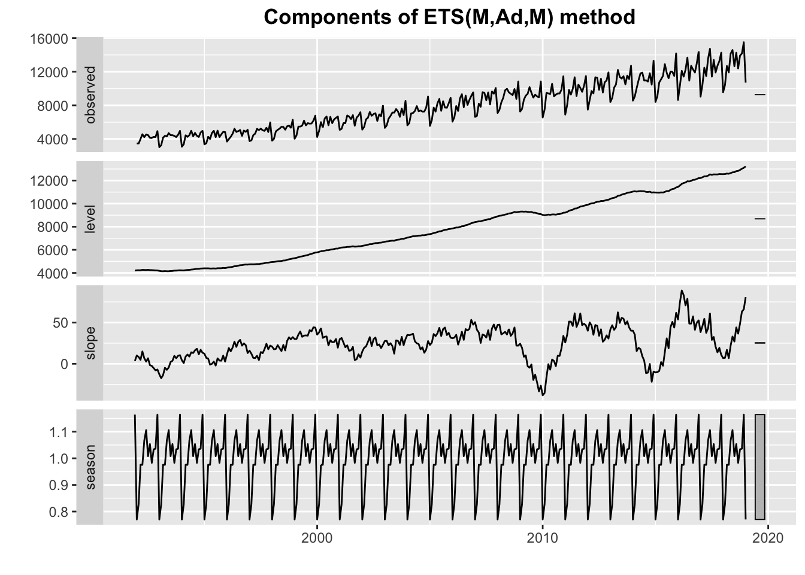
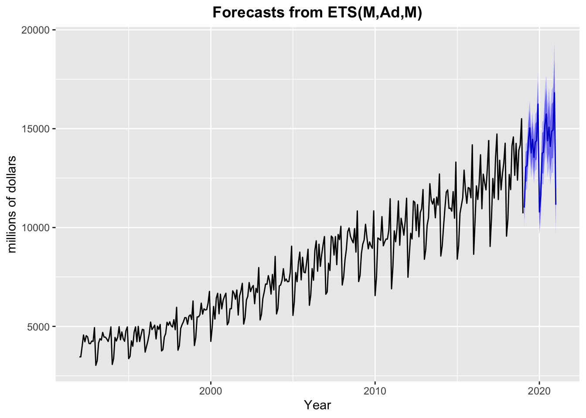

#Load in data
Data = read.csv("Alcohol_Sales_Project.csv", stringsAsFactors = FALSE)
wine.ts <- ts(Data$S4248SM144NCEN, start = c(1992, 1), frequency = 12)
autoplot(wine.ts)+ ggtitle("U.S. Alcoholic Beverages Sales")+xlab("Year") +
ylab("millions of dollars")+theme(plot.title = element_text(hjust = 0.5,face = "bold"))
I used alcoholic beverages sales in the U.S. from 1992 to 2019. By plotting the data, we can clearly see that there is seasonality with a frequency of five years. Therefore, I chose to used Holt-Winters’s additive, multiplicative because they are more suitable to capture seasonality.
## Holt-Winters’ method additive $ multi
wine_data <- window(wine.ts, start=c(1992,1))
# Estimate parameters
#fc <- holt(wine_data, h=5)
#autoplot(fc)
model1 <- hw(wine_data,seasonal="additive")
model2 <- hw(wine_data,seasonal="multiplicative")
autoplot(wine_data) +
autolayer(model1, series="Model 1 (additive)", PI=FALSE) +
autolayer(model2, series="Model 2 (multiplicative)",
PI=FALSE) +
xlab("Year") +
ylab("millions of dollars") +
guides(colour=guide_legend(title="Forecast"))
ets(wine.ts, model="ZZZ", alpha= NULL, beta = NULL, gamma= NULL)## ETS(M,Ad,M)
##
## Call:
## ets(y = wine.ts, model = "ZZZ", alpha = NULL, beta = NULL, gamma = NULL)
##
## Smoothing parameters:
## alpha = 0.0805
## beta = 0.0232
## gamma = 1e-04
## phi = 0.9592
##
## Initial states:
## l = 4199.083
## b = 3.4466
## s = 1.1642 1.0362 1.0338 0.9829 1.0534 1.0081
## 1.106 1.0665 0.9754 0.9758 0.8275 0.7702
##
## sigma: 0.0455
##
## AIC AICc BIC
## 5672.314 5674.549 5740.422model3 <- ets(wine.ts)
autoplot(model3)+
theme(plot.title = element_text(hjust = 0.5,face = "bold"))
model3 %>% forecast(h=ifelse(model3$m>1, 2*model3$m, 10)) %>%
autoplot() + xlab("Year") +
ylab("millions of dollars") +
theme(plot.title = element_text(hjust = 0.5,face = "bold"))
# Results
round(accuracy(model1), 2)## ME RMSE MAE MPE MAPE MASE ACF1
## Training set 34.61 401.4 314.85 0.31 4.22 0.74 -0.22round(accuracy(model2),2)## ME RMSE MAE MPE MAPE MASE ACF1
## Training set 33.52 358.48 284.06 0.36 3.68 0.67 -0.27summary(model1)##
## Forecast method: Holt-Winters' additive method
##
## Model Information:
## Holt-Winters' additive method
##
## Call:
## hw(y = wine_data, seasonal = "additive")
##
## Smoothing parameters:
## alpha = 0.118
## beta = 0.0031
## gamma = 0.882
##
## Initial states:
## l = 4436.4199
## b = 7.9429
## s = 1301.63 263.7306 259.4684 -105.7698 396.2852 -8.0715
## 896.4301 553.4148 -240.3655 -158.3984 -1327.501 -1830.852
##
## sigma: 411.6596
##
## AIC AICc BIC
## 5810.464 5812.457 5874.789
##
## Error measures:
## ME RMSE MAE MPE MAPE MASE ACF1
## Training set 34.60908 401.3986 314.8533 0.310144 4.217047 0.7447447 -0.2190557
##
## Forecasts:
## Point Forecast Lo 80 Hi 80 Lo 95 Hi 95
## Feb 2019 11266.06 10738.49 11793.62 10459.22 12072.90
## Mar 2019 13564.38 13032.96 14095.81 12751.65 14377.12
## Apr 2019 12805.73 12270.27 13341.18 11986.82 13624.63
## May 2019 14997.07 14457.41 15536.73 14171.74 15822.40
## Jun 2019 15496.05 14952.01 16040.08 14664.02 16328.07
## Jul 2019 13443.28 12894.69 13991.87 12604.29 14282.27
## Aug 2019 15002.48 14449.16 15555.79 14156.25 15848.70
## Sep 2019 13145.98 12587.76 13704.20 12292.25 13999.70
## Oct 2019 14580.91 14017.60 15144.21 13719.41 15442.41
## Nov 2019 14803.41 14234.84 15371.97 13933.87 15672.94
## Dec 2019 16070.23 15496.23 16644.23 15192.38 16948.08
## Jan 2020 11236.29 10656.68 11815.89 10349.85 12122.72
## Feb 2020 11784.35 10987.10 12581.59 10565.07 13003.62
## Mar 2020 14082.67 13281.04 14884.30 12856.69 15308.66
## Apr 2020 13324.01 12517.85 14130.18 12091.09 14556.94
## May 2020 15515.36 14704.50 16326.21 14275.26 16755.45
## Jun 2020 16014.33 15198.64 16830.03 14766.84 17261.83
## Jul 2020 13961.57 13140.88 14782.25 12706.44 15216.70
## Aug 2020 15520.77 14694.94 16346.59 14257.77 16783.76
## Sep 2020 13664.27 12833.14 14495.39 12393.17 14935.36
## Oct 2020 15099.20 14262.62 15935.77 13819.77 16378.63
## Nov 2020 15321.69 14479.52 16163.87 14033.69 16609.69
## Dec 2020 16588.52 15740.58 17436.45 15291.71 17885.32
## Jan 2021 11754.58 10900.73 12608.42 10448.73 13060.42summary(model2)##
## Forecast method: Holt-Winters' multiplicative method
##
## Model Information:
## Holt-Winters' multiplicative method
##
## Call:
## hw(y = wine_data, seasonal = "multiplicative")
##
## Smoothing parameters:
## alpha = 0.0873
## beta = 0.0038
## gamma = 2e-04
##
## Initial states:
## l = 4198.6663
## b = 3.6891
## s = 1.1668 1.0386 1.0298 0.9852 1.0571 0.9984
## 1.1157 1.0674 0.9738 0.9734 0.8301 0.7637
##
## sigma: 0.0459
##
## AIC AICc BIC
## 5677.426 5679.419 5741.751
##
## Error measures:
## ME RMSE MAE MPE MAPE MASE ACF1
## Training set 33.52376 358.4776 284.0622 0.3587367 3.684699 0.6719122 -0.2723903
##
## Forecasts:
## Point Forecast Lo 80 Hi 80 Lo 95 Hi 95
## Feb 2019 11075.18 10424.026 11726.34 10079.326 12071.04
## Mar 2019 13033.35 12263.910 13802.79 11856.593 14210.11
## Apr 2019 13084.55 12308.685 13860.41 11897.968 14271.13
## May 2019 14393.01 13535.567 15250.46 13081.663 15704.37
## Jun 2019 15096.40 14192.582 16000.22 13714.130 16478.67
## Jul 2019 13557.68 12741.725 14373.64 12309.784 14805.58
## Aug 2019 14403.78 13532.104 15275.45 13070.668 15736.89
## Sep 2019 13470.80 12650.850 14290.76 12216.793 14724.81
## Oct 2019 14129.58 13264.283 14994.87 12806.225 15452.93
## Nov 2019 14297.75 13416.578 15178.92 12950.115 15645.38
## Dec 2019 16117.90 15117.958 17117.84 14588.621 17647.18
## Jan 2020 10585.97 9924.692 11247.26 9574.630 11597.32
## Feb 2020 11544.99 10818.616 12271.37 10434.096 12655.89
## Mar 2020 13584.28 12723.250 14445.31 12267.449 14901.11
## Apr 2020 13635.70 12764.773 14506.62 12303.733 14967.66
## May 2020 14997.16 14031.688 15962.63 13520.598 16473.72
## Jun 2020 15727.86 14707.086 16748.63 14166.721 17289.00
## Jul 2020 14122.81 13198.519 15047.10 12709.228 15536.39
## Aug 2020 15002.10 14011.806 15992.39 13487.577 16516.62
## Sep 2020 14028.44 13094.247 14962.63 12599.716 15457.16
## Oct 2020 14712.47 13723.882 15701.06 13200.554 16224.39
## Nov 2020 14885.56 13876.112 15895.00 13341.743 16429.37
## Dec 2020 16778.28 15629.771 17926.79 15021.788 18534.77
## Jan 2021 11018.23 10256.771 11779.68 9853.681 12182.77round(accuracy(model3), 2)## ME RMSE MAE MPE MAPE MASE ACF1
## Training set 53.46 364.39 285.52 0.5 3.66 0.68 -0.29summary(model3)## ETS(M,Ad,M)
##
## Call:
## ets(y = wine.ts)
##
## Smoothing parameters:
## alpha = 0.0805
## beta = 0.0232
## gamma = 1e-04
## phi = 0.9592
##
## Initial states:
## l = 4199.083
## b = 3.4466
## s = 1.1642 1.0362 1.0338 0.9829 1.0534 1.0081
## 1.106 1.0665 0.9754 0.9758 0.8275 0.7702
##
## sigma: 0.0455
##
## AIC AICc BIC
## 5672.314 5674.549 5740.422
##
## Training set error measures:
## ME RMSE MAE MPE MAPE MASE ACF1
## Training set 53.45892 364.3906 285.5164 0.5004852 3.657119 0.6753521 -0.2918586By comparing the training set accuracy, model 2 has relatively a better performance than model 1 except at MPE. Thus, the multiplicative model fits the data best so far. Then, I used the ets() to select a model with the smallest AICc, and selected ETS(M, Ad, M) model. Looking at the summary of each model, model 2 is still better than other models in terms of RMSE. However, the problem of RMSE is that the longer the lag length, the better the RMSE value, meaning it will not get worse by including more explanatory variables. Hence, AIC will be used to evaluate the model fit. And the ETS(M, Ad, M) is the most appropriate one because of its lower AIC criteria.